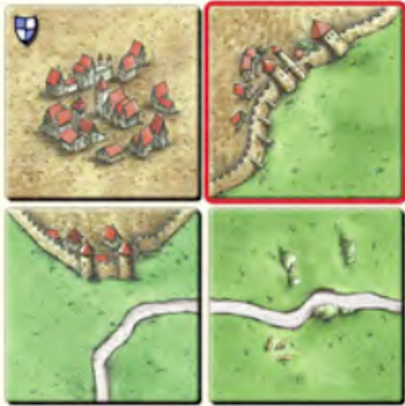
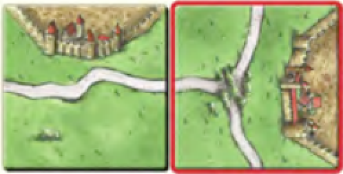
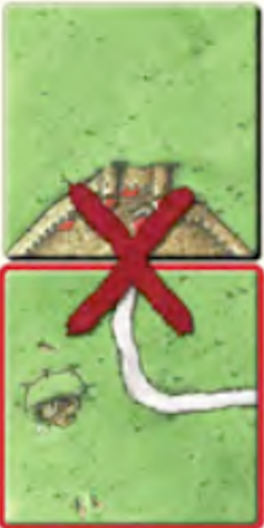
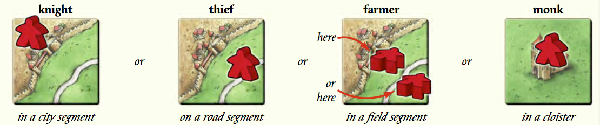
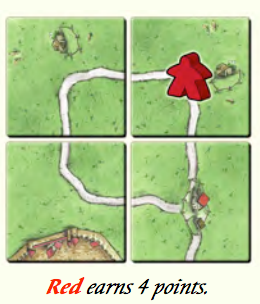
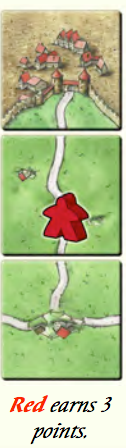
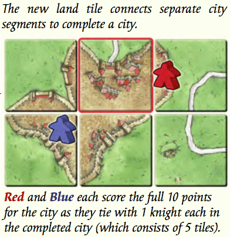
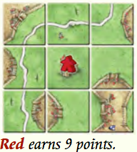
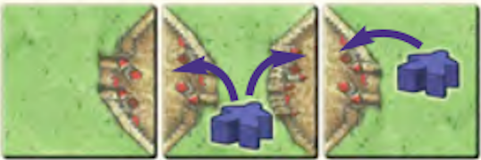

Overview
The players place land tiles turn by turn. As they do so, the roads, cities, fields, and cloisters emerge and grow. On these, the players can deploy their followers to earn points. Players score points during the game and at the end. The player with the most points wins!
Playing the Game
The sequence of events for a turn are as follows:
- The player legally places the randomly drawn tile on the board.
- The player may choose to place a follower from his/her supply to the land tile just placed.
- The turn is now over. If the cloister, road, or city are completed as a result of the player's tile placement, he/she can increment the score accordingly, as well as retrieve any followers on the completed area(s).
Tile Placement
Tiles must be placed adjacent and abutting one previously placed tile. Corner-to-corner placement is not sufficient.
The new tile must be placed so that all field, city, and road segments on the new tile continue to field, city, and road segments, respectively, on all abutting tiles (cloisters are always complete within single tiles).



Deploying Followers
After the player places a land tile, a follower can be deployed, according to the following rules:
- Only 1 follower can be placed per turn.
- The follower must be deployed to the tile the player just played.
- The follower can only be deployed to any of the following tile segments: road, city, cloister, or field.
- A follower can not be placed if, through adjacent tile(s), it connects to a like segment where a follower is already placed, no matter how far, even if it belongs to the same player.
- If a player has used all of his/her supply of followers (7), he/she will continue to take turns placing tiles. In order to place additional followers, they must be returned to his/her supply by completing roads, cities, or cloisters where that player's followers are placed.

After and only after a land type is completed, those followers are returned to their player's supply for use on later turns.
It is possible to place a tile, a follower, complete a land type, and have returned the follower all on the same turn.
Scoring
Roads
A road is complete when the road segments on both ends connect to a crossing, city segment, or a cloister, or when the road forms a complete loop. One point per tile is scored for a completed road.


Cities
A city is complete when surrounded by a city wall with no gaps in the wall nor holes in the city. Two points are scored per tile encapsulated by the city walls. Each pennant contained in the city earns an additional 2 points.
It is possible through clever tile placement for more than one follower to be present on a completed road or city. Only the player with the most followers gets points for the completed city or road. If both players have an equal number of followers on the same city or road, they both earn the full points for the completed item.

Cloisters
A cloister is complete when surrounded on all eight sides by played land tiles. Nine points are scored - 1 for the cloister tile and 1 for each surrounding tile.

Farms
Connected field segments are called farms. Farms are not scored until the end of the game. Followers placed on farms remain until the end of the game, never returning to their player's supply.
End of game
The game ends when no more tiles are left to be drawn. For incomplete roads or cities, players with followers placed on those segments earn 1 point for each tile connected to that follower's segment. Pennants are worth 1 point each. If more than one follower exists on a connected segment, use the same rules for completed roads and cities. For cloisters, 1 point is scored for each surrounding tile plus 1 for the cloister.
Farm scoring
Only completed cities count for farm scoring. The follower must be in a farm that borders a city. Distance does not matter. For each completed city, the player with the most connected field-followers scores 3 points. In case of a tie of followers, each player scores 3 points per city. It is possible to score multiple times for the same city, if the followers' field segments do not connect. Tip: Fields are not connected when only touching at the corner.

